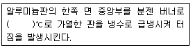
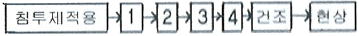
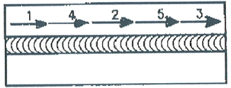
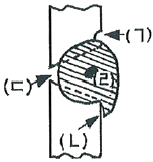

침투비파괴검사기사(구) (2007-09-02 기출문제)
1과목: 침투탐상시험원리
1. 후유화성 침투탐상시험에서 유화시간은 일반적으로 어떻게 결정하는가?
- 제조회사의 권고에 따른다.
- 침투시간과 동일하게 한다.
- 현상시간의 반으로 한다.
- 실험적으로 구하여 결정한다.
(정답률: 알수없음)

2. 형광침투탕상시험에서 자외선조사등이 필요한 가장 주된 이유는?
- 지시 모양이 확대되어 잘 보이기 때문이다.
- 자외선조사등에 의한 열로 건조를 용이하게 한다.
- 현상제가 형광을 발생시켜 잘 보이기 때문이다.
- 육안으로 지시를 볼 수 있도록 도와준다.
(정답률: 알수없음)
3. 표면이 거친 시험체의 침투탐상시험에 적용하는 현상제로 가장 적합한 것은?
- 건식 현상제
- 습식 현상제
- 수세성 현상제
- 비수세성 현상제
(정답률: 알수없음)
4. 침투탐상시험에서 침투액의 침투속도를 조절할 수 있는 물리적 특성으로 다른 어느 특성보다도 가장 큰 영향을 미칠 수 있는 것은?
- 침투액의 점성
- 침투액의 비체적
- 침투액의 휘발성
- 침투액의 침윤력
(정답률: 알수없음)
5. 다음 중 유화제의 특성에 대한 설명으로 틀린 것은?
- 침투액과 반응을 하지 않아야 한다.
- 부식성 및 독성이 없어야 한다.
- 중성이어야 하고 세척성이 좋아야 한다.
- 수분 등이 침투되어도 성능의 저하가 적어야 한다.
(정답률: 알수없음)
6. 무현상법에 대한 설명으로 옳지 않은 것은?
- 현상과정에서 현상제를 적용하지 않고 관찰하는 방법이다.
- 현상제를 작용하는 검사방법에 비해 검사 감도가 낮다.
- 시험체에 열을 가해 침투제가 시험면 밖으로 나오게 하여 관찰하는 방법이다.
- 용제제거성 염색침투탕상시험에 적용되는 방법이다.
(정답률: 알수없음)
7. 침투탐상시험 공정 중 대형구조물 부분검사에 가장 적합한 시험방법의 절차로 옳은 것은?
- 전처리→침투처리→유화처리→세척처리→현상처리→건조처리→관찰→후처리
- 전처리→침투처리→세척처리→현상처리→관찰→후처리
- 전처리→침투처리→세척처리→유화처리→현상처리→관찰→후처리
- 전처리→침투처리→세척처리→건조처리→관찰→후처리
(정답률: 알수없음)
8. 침투탐상시험에서 침투액의 적심성(Wetting ability)은 무엇으로 측정되는가?
- 비중계
- 모세관
- 점도
- 접촉각
(정답률: 알수없음)
9. 침투탐상시험에서 침투액의 종류에 따른 식별성의 결정요인을 설명한 것으로 틀린 것은?
- 형광침투액에서는 결함의 크기 및 자외선 강도에 의해 식별성이 결정된다.
- 이원성침투액에서는 조명의 밝기 또는 결함의 크기에 의해서만 식별성이 결정된다.
- 염색침투액에서는 결함의 크기 및 조명의 밝기에 의해 식별성이 결정된다.
- 염색침투액에서는 자연광 또는 조명의 밝기에 의해 식별성이 결정된다.
(정답률: 알수없음)
10. 다른 침투탐상시험과 비교한 후유화성 형광침투탐상시험의 장점으로 옳은 것은?
- 모래 주조물(sand casting)과 같은 거친 표면을 검사하는데 좋다.
- 다른 침투탐상시험방법보다 공정이 비교적 간단하다.
- 전기분해로 얇은 보호막을 입힌 표면에 적용할 수 있다.
- 넓고 얕은 결함을 탐지하는데 적합하다.
(정답률: 알수없음)
11. 후유화성 염색침투탐상시험에 대한 일반적인 설명으로 옳지 않은 것은?
- 과세척의 폐단이 적고 비교적 미세한 결함의 탐상도 가능하다.
- 시험체의 표면이 거친 경우에는 적용이 곤란하다.
- 유화처리를 필요로 하기 때문에 탐상절차가 복잡하여 숙련이 요구된다.
- 구조물이나 대형 시험체의 탐상에 적합하다.
(정답률: 알수없음)
12. 일반적으로 침투액(penetrants)의 비중은 어느 정도의 것이 적용되는가? (단, 비가연성 염색침투액은 제외한다.
- 약 1.2 이하
- 약 2.5 이하
- 약 3.0 이하
- 약 5.0 이하
(정답률: 알수없음)
13. 다음은 침투탐상시험에 사용되는 알루미늄 비교시험편의 제조방법을 설명한 것이다. ()안에 적합한 온도범위는?

- 300~330℃
- 410~430℃
- 510~530℃
- 600~630℃
(정답률: 알수없음)
14. 침투탐상시험에 사용되는 침투액이 갖추어야 할 요건이 아닌 것은?
- 침투성이 좋아야 한다.
- 세척성이 좋아야 한다.
- 부식성이 없어야 한다.
- 인화점이 낮아야 한다.
(정답률: 알수없음)
15. 침투탐상시험 시 검출되기 가장 어려운 결함은 어떤 것인가?
- 깊이가 얕고 넓이가 큰 결함
- 깊이가 깊은 구멍
- 단조 겹침
- 깊이가 깊고 넓이가 작은 결함
(정답률: 알수없음)
16. 페인트가 칠하여진 부분의 침투탐상검사를 수행할 때 가장 먼저 취하여야 할 조치로 옳은 것은?
- 표면에 조심스럽게 침투액을 뿌린다.
- 페인트를 완전히 제거한다.
- 세척제로 표면을 깨끗이 닦아 낸다.
- 페인트로 매끄럽게 칠하여진 표면을 거칠게 하기 위하여 브러쉬로 문지른다.
(정답률: 알수없음)
17. 다음 중 유화제(emulsifier)의 적용방법으로 적절하지 않은 것은?
- 분무법
- 솔질법
- 담금법
- 흘림법
(정답률: 알수없음)
18. 침투탐상시험시 불연속부의 한쪽 끝 부분이 막혀 있을 경우 불연속부에 남아 있는 공기로 인하여 모세관 현상이 약해져서 침투액이 불연속부에 침투하는 것을 방해 할 것으로 생각할 수 있는데 실제로는 그렇지 않다. 그 이유를 가장 잘 설명한 것은?
- 침투액이 불연속부에 침투할 때 전면에 걸쳐 동시에 침투하지 않기 때문에 먼저 침투된 침투액이 불연속부 내에 존재하는 공기를 밀어내기 때문이다.
- 침투액이 불연속부 내에 갇혀 있는 공기를 분해하여 표면으로 방출하기 때문이다.
- 불연속부의 폭은 일반적으로 매우 좁기 때문에 공기 분자의 크기로 인해 영향을 받지 않는다.
- 침투액이 불연속부에 침투할 때 모세관 현상으로 인하여 좁은 부분에서 작게 나타나기 때문이다.
(정답률: 알수없음)
19. 수세성 형광침투탐상시험의 특성에 대한 설명으로 옳지 않은 것은?
- 깊이가 아주 얕은 불연속에 대하여는 신뢰도가 낮다.
- 시험 면적을 한 번의 조작으로 탐상할 수 있다.
- 전원, 수도설비, 어두운 장소 및 자외선등이 필요하다.
- 다량의 소형 부품 탐상시 탐상속도가 느리다.
(정답률: 알수없음)
20. 재료의 침투탐상시험시 불연속을 막아 버릴 염려가 있는 금속의 녹, 스케일 등을 제거하는 전처리 방법으로 가장 효과적인 것은?
- 증기 세척
- 알칼리 세척
- 초음파 세척
- 청정제 세척
(정답률: 알수없음)
2과목: 침투탐상검사
21. 유화제의 주성분은 계면활성제인데 이는 물세척을 가능하게 해주기 때문이다. 이 유화제가 갖추어야 할 조건이 아닌 것은?
- 결함에 대한 침투성이 낮아야 한다.
- 후유화성 침투액과 잘 용해되어야 한다.
- 침투액의 혼입에 의한 성능저하가 적어야 한다.
- 시험체의 표면에서 침투액과 동일한 색채를 가져야 한다.
(정답률: 알수없음)
22. 물베이스 유화제빕(Hydrophilic Emulsifiers)의 침투탐상검사 과정을 다음과 같이 나타낼 때 □안의 4단계 과정 중 “2”단계에 알맞은 과정은?

- 유화제 배액
- 전처리
- 유화제 적용
- 후처리
(정답률: 알수없음)
23. 매우 미세한 균열이 존재할 것으로 예상되는 유리를 침투탐상검사할 때 효과적인 방법은?
- 수세성 형광법
- 후유화성 색체대비법
- 하전입자법
- 용제제거성형광법
(정답률: 알수없음)
24. 형광침투 탐상지시의 자동 스캐닝 장비에서 441.6nm 정도의 파장을 갖는 진한 청색(deep blue)의 레이저를 발생하는 것은?
- He=cd
- Am-be
- Po-Be
- He-Li
(정답률: 알수없음)
25. 침투탐상검사의 장점에 대한 설명으로 틀린 것은?
- 침투탐상검사는 온도의 영향을 받지 않는다.
- 침투탐상검사는 비교적 단순한 검사 방법이다.
- 침투탐상검사는 미세한 표면균열을 찾아내는데 유리하다.
- 침투탐상검사는 작은 시험체나 대형 구조물의 표면 검사에 적용이 용이하다.
(정답률: 알수없음)
26. 일반적으로 용접을 진행하다 멈추는 곳의 용접비드 끝에 오목하게 파여서 있는 부분을 무슨 결함이라 하는가?
- 언더컷
- 크레이터
- 오버랩
- 용입 부족
(정답률: 알수없음)
27. 침투탐상검사시 희미했던 지시부가 재검사 후 다시 나타나지 않았다. 검사법이 적당하였다면 그 주된 이유는?
- 의사 지시였다.
- 작은 결함일 가능성이 있다.
- 검사부위를 과도하게 세척하였다.
- 재검사 때문에 결함이 밀봉되었다.
(정답률: 알수없음)
28. 표면에 오염 물질이 존재함에도 불구하고 침투액 막이 균일하고 일정하게 전 표면에 형성되도록 해줄 수 있는 침투액의 기능은?
- 낮은 증발효과
- 높은 점성
- 큰 적심능력
- 높은 접촉각
(정답률: 알수없음)
29. 유화제의 적정한 성능을 유지하기 위해서는 주기적인 관리가 필요하다. 다음 중 관리주기를 가장 길게 해도되는 특성은?
- 세척성
- 수분 함유량(기름베이스 유화제)
- 농도(물베이스 유화제)
- 유화제의 오염
(정답률: 알수없음)
30. 침투탐상검사시 관찰에 관련된 일반적인 설명으로 틀린 것은?:
- 형광 침투액을 사용시 시험체 표면에 규정된 값 이상의 자외선을 비춘다.
- 침투지시모양 관찰은 현상제 적용 후 7~60분 사이가 바람직하다.
- 염색 침투액을 사용하는 경우 시험면의 밝기는 200lx 이상이 바람직하다.
- 침투지시모양이 나타났을 때 결함 침투지시인가, 의사지시인가를 먼저 확인한다.
(정답률: 알수없음)
31. 침투탐상검사의 검조처리에 관한 설명으로 틀린 것은?
- 고온에서 장시간 건조시키면 결함의 검출능력이 낮아진다.
- 일반적으로 용제세척을 수행한 경우는 가열건조를 하지 않는다.
- 건조처리의 적용시기는 현상제 종류와 관계없이 세척방법에 따라 달라진다.
- 진열식 또는 적외선 건조는 국부적으로 가열되어 균일성이 낮아지므로 가능한 한 피하는 것이 좋다.
(정답률: 알수없음)
32. 열간 압연한 강판(10×10cm 또는 4×4인치)을 45° 정도 기울인 후 습식현상제 25mL 정도를 시험편에 부어 5분정도 배액시킨 후 107℃(또는 255°F) 정도에서 건조시킨 시험편을 대비표준과 비교하는 습식현상제의 성능시험은?
- 퍼짐성 시험
- 부식 시험
- 표면 균일서 시험
- 제거성 시험
(정답률: 알수없음)
33. 후유화성 형광침투액 및 습식현상제를 사용하기 위한 반거치식 장비를 설치하고자 할 때 건조기(Dryer)의 위치로 적당한 것은?
- 유화탱크 앞에
- 현상탱크 뒤에
- 현상탱크 앞에
- 세척단계 후에
(정답률: 알수없음)
34. 시험체에 존재하는 불연속으로부터 나타나는 판독 및 평가의 대상이 되는 지시를 뜻하는 용어는?
- 의사 모양
- 관련 지시
- 무관련지시
- 유사결함
(정답률: 알수없음)
35. 에어로졸형 용제제거성 침투탐상제의 사용에 대한 설명으로 틀린 것은?
- 온도가 낮아 잘 분사되지 않은 때는 온수 속에 탐상제 캔을 넣어 온도를 올린다.
- 액화석유가스 등의 분사가스를 충전한 것으로서 보통상온에서 3~4kgf/cm2의 압력이다.
- 온도에 따라 압력이 변화하기 때문에 보관 및 사용할 때에는 주의해야 한다.
- 시험면에 적용할 때에는 가능한 한 멀리 떨어져서 분무하여 골고루 분포되게 한다.
(정답률: 알수없음)
36. 침투탐상검사시 현상제의 특성으로 옳지 않은 것은?
- 미세한 입자모양을 가져야 한다.
- 흡수 작용이 높은 흡수력 재료이어야 한다.
- 결함 부위에서 침투액에 쉽게 젖지 않아야 한다.
- 표면에 균일한 얇은 막을 형성시킬 수 있어야 한다.
(정답률: 알수없음)
37. 소형의 알루미늄 주물품이 시험단계를 지나 양산단계에 이르렀을 때 적용하는 침투탐상검사로 가장 적합한 방법은?
- 수세법
- 물베이스 유화제법
- 용제법
- 기름베이스 유화제법
(정답률: 알수없음)
38. 다음 중 사용 중에 생길 수 있는 대표적인 결함은?
- 냉간균열
- 가공
- 라미네이션
- 피로균열
(정답률: 알수없음)
39. 다음 중 침투탐상검사시 의사지시가 나타날 가능성이 가장 높은 경우는?
- 과도하게 세척한 경우
- 침투액이 차가운 경우
- 현상제의 양이 미흡한 경우
- 먼지나 거친 표면인 경우
(정답률: 알수없음)
40. 다음 중 잉여 수세성 침투액을 제거하는 방법으로 가장 옳은 것은?
- 세척탱크에 즉시 집어 넣는다.
- 흐르는 물로 직접 닦아 낸다.
- 뜨거운 물에서 끓이거나 증기분사로 닦아 낸다.
- 호스나 분사 노즐을 사용하여 적당한 수압으로 물을 뿌려 닦아 낸다.
(정답률: 알수없음)
3과목: 침투탐상관련규격
41. 보일러 및 압력용기에 대한 침투탐상검사(ASME Sec V. Art.6)에서 탐상은 검사절차서에 따라 수행토록 한다. 다음 중 검사절차서를 개정할 필요가 없는 경우는?
- 침투액, 현상액, 세척액의 종류가 변경된 때
- 전처리 방법이 변경될 때
- 검사 요원이 변경될 때
- 검사 방법이 변경될 때
(정답률: 알수없음)
42. 보일러 및 압력용기에 대한 표준 침투탐상검사(ASME Sec V. Art.24 SE-165)에 따른 탐상시험시 표면의 스케일이나 녹을 제거, 웒ㅎ는 표면을 만드는 전처리 방법으로 적합한 것은?
- 증기세척 전처리
- 초음파 전처리
- 기계적 전처리
- 용제 분무 전처리
(정답률: 알수없음)
43. 항공우주용 기기의 침투탐상 검사방법(KS W 0914)에 따른 탐상시험시 특별한 지시가 없을 때 후유화성(친유성) 형광 침투제에 유화제를 적용한 후 몇 분 이내에 세척하여야 하는가?
- 1분
- 3분
- 5분
- 10분
(정답률: 알수없음)
44. 항공우주용 기기의 침투탐상 검사방법(KS W 0914)에서 규정하고 있는 침투제 중 MIL-I-25135에 따라 사용차지 않은 침투액의 시료를 대비기준으로 사용하는 것은?
- 수세성 형광침투 탐상제
- 용제제기성 염색침투 탐상제
- 후유화성(친수성 유화제) 염색침투 탐상제
- 후유화성(친유성 유화제) 염색침투 탐상제
(정답률: 알수없음)
45. 침투탐상 시험방법 및 침투지시모양의 분류(KS B 0816)에 따른 침투액의 점검 내용으로 틀린 것은?
- 사용중인 침투액의 성능시험을 하여 결함검출능력이 저하된 경우 폐기한다.
- 사용중인 침투액의 성능시험을 하여 침투지시 모양, 휘도저하, 색상이 변한 경우 우선 먼저 사용한다.
- 사용중인 침투액의 겉모양 검사를 하여 현저한 흐림이나 침전물이 생겼을 때 폐기한다.
- 사용중인 침투액의 겉모양 검사를 하여 형광휘도의 저하, 색상의 변화, 세척성의 저하 등이 인정되었을 때 폐기한다.
(정답률: 알수없음)
46. 보일러 및 압력용기에 대한 표준 침투탐상검사(ASME Sec V. Art.24 SE-165)에서 단조 겹침에 대한 탐상시험 지시로서 가장 적당한 형상은?
- 원형이나 거의 원형에 가까운 지시
- 군집된 원형 지시
- 연속적인 선
- 점들로 이루어진 원형 지시
(정답률: 알수없음)
47. 침투탐상 시험방법 및 침투참지시모양의 분류(KS D 0816)에서 갈라짐 이외의 겨랗ㅁ으로 그 길이가 너비의 3배 이상인 결함을 무엇이라 하는가?
- 균열
- 라미네이션
- 원형상 결함
- 선상 결함
(정답률: 알수없음)
48. 보일러 및 압력용기에 대한 침투탐상검사(ASME Sec V. Art.6)에서 탐상시험은 문서화된 절차서에 따라야 한다. 다음 중 이 절차서에 포함되어야 하는 최소한의 요구 사항에 해당되지 않는 것은?
- 탐상제의 종류
- 탐상제의 적용방법
- 시험체의 용도
- 관찰용 조명등의 최소 강도
(정답률: 알수없음)
49. 보일러 및 압력용기에 대한 침투탐상검사(ASME Sec V. Art.6)에서 따라 용접부를 침투탐상시험할 때 시험부와 인접 경계면은 적어도 얖 몇 mm까지 전처리하여야 하는가?
- 13mm
- 25mm
- 38mm
- 5mm
(정답률: 알수없음)
50. 보일러 및 압력용기에 대한 침투탐상검사(ASME Sec V. Art.24 SE-165)에서 자외선등의 강도는 주기적으로 점검하여야 한다. 그 점검 주기로 옳은 것은?
- 매일
- 매주
- 매월
- 격 주마다
(정답률: 알수없음)
51. 항공우주용 기기의 침투탐상 검사방법(KS W 0914)의 규정에서 “평가(Evaluation)란 용어의 의미로 옳은 것은?
- 지시무늬를 판단한 후에 구성 부품의 합격 여부를 결정하기 위하여 하는 검토
- 지시를 검출하기 위하여 행하는 검사
- 지시무늬의 발생원인 및 그 종류를 판정하는 것
- 침투탐상처리 공정 종류 후 적절한 조명하에서 하는 구성부품의 육안검사
(정답률: 알수없음)
52. 침투탐상 시험방법 및 침투지시모양의 분류(KS B 0816)에 따른 탐상시험에서 여러 개의 지심양이 거의 동일 직선상에 존재하고 그 상호처리가 얼마 이하일 경우 연속침투지시모양이라 하는가?
- 2mm
- 4mm
- 5mm
- 10mm
(정답률: 알수없음)
53. 보일러 및 압력용기에 대한 침투탐상검사(ASME Sec V. Art.24 SE-165)에에 의해 단조품의 미세균열을 정밀시험하고자 후유화성 형광침투탐상시험법을 적용, 어두운 장소에서 지시를 관찰하려고 한다. 이 때 허용되는 주위의 최대 밝기는?
- 10룩스
- 20룩스
- 30룩스
- 40룩스
(정답률: 알수없음)
54. 침투탐상 시험방법 및 침투참지시모양의 분류(KS D 0816)에 규정한 15~50℃ 표준온도 범위에서 현상시간은?
- 3분
- 5분
- 7분
- 9분
(정답률: 알수없음)
55. 보일러 및 압력용기에 대한 침투탐상검사(ASME Sec V. Art.6)에 따라 형광침투액을 사용하는 경우 관찰장치로서 반드시 설치하여야 하는 것은?
- 조도계
- 광전 형광계
- 자외선조사장치
- 시험체의 표면온도를 측정하기 위한 온도계
(정답률: 알수없음)
56. 클라리언트가 접속하려는 웹서버에 직접 데이터를 가져오지 않고 저장된 데이터를 가져옴으로써 속도가 빠르고, 전체 네트워크 부하를 줄일 수 있는 역할을 하는 것은?
- 프록시(Proxy)
- 도메인(Somain)
- 방화벽(Firewall)
- 웹서버(Web serber)
(정답률: 알수없음)
57. 다음 중 공통 주제에 대하여 정보나 경해를 나눌 수 있는 인터넷 서비스로 다양한 그룹으로 분히되어 새로운 정보를 실시간에 얻을 수 있는 것은?
- 채팅
- 뉴스그룹
- 웹메일
- 텔넷
(정답률: 알수없음)
58. 컴퓨터 보조기억 장치에 해당하지 않는 것은?
- USB
- Floppy Disk
- DVD
- Scannr
(정답률: 알수없음)
59. 인터넷상에서 전화를 걸 수 있는 기술을 무엇이라고 하는가?
- VoIP
- VOD
- AOD
- ADSL
(정답률: 알수없음)
60. 컴퓨터에서 타이머에 의한 인터럽트 방식은?
- 외부 인터럽트
- 관리자 호출 인터럽트
- 기계검사 인터럽트
- 프로그램 검사 인터럽트
(정답률: 알수없음)
4과목: 금속재료학
61. 다음 중 금속초미립자의 특성을 설명한 것으로 틀린 것은?
- 표면적이 커서 촉매로 이용된다.
- Cr계 합금 초미립자는 빛을 잘 흡수한다.
- Fe계 합금 초미립자는 금속덩어리보다 자성이 강하므로 자성재료로 이용된다.
- 저온에서 열저항이 매우 작아서 열의 부도체이다.
(정답률: 알수없음)
62. 다음 중 주석의 특성을 설명한 것으로 틀린 것은?
- 상온가공경화가 없으므로 소성가공이 쉽다.
- 비중은 약 10.3이고, 융점은 약 670℃ 정도이다.
- 무독성이므로 의약품, 식품 등의 포장용, 튜브에 사용된다.
- 주석은 백색주석(β-Sn)이 저온에서 변태하여 회색주석(α-Sn)으로 변화한다.
(정답률: 알수없음)
63. 두랄루민(duralumin)의 기본 합금계는?
- Pb-Mn-Si 계
- Al-Cu-Mg 계
- Al-Zn-Ni 계
- Ca-Si-Cu 계
(정답률: 알수없음)
64. 열처리 효과에 의하여 재료의 내ㆍ외부가 다르게 경화되는 현상을 무엇이라 하는가?
- 연화풀림
- 소성변형
- 질량효과
- 가공경화
(정답률: 알수없음)
65. 다음 중 점결합이 아닌 것은?
- 전위
- 원자공공
- 격자간 원자
- 치환형 원자
(정답률: 알수없음)
66. 황동의 조직에 대한 설명으로 틀린 것은?
- α+β상은 Zn이 38% 이상이 될 때 형성된다.
- α 상은 Cu에 Zn을 고용한 상이며, 면심입방격자이다.
- γ상은 Cu2Zn3의 조성을 갖는 중간상으로 고아연합금에서는 실용성이 없다.
- β 상은 700~800℃에서 β(불규칙격자)⇄β‘(규칙격자)의 비연속적 변화를 일으키며 조밀입방격자를 갖는다.
(정답률: 알수없음)
67. 0.5%의 탄소를 포함하는 아공석강을 오스테나이트 영역으로 가열한 다음 상온ᄁᆞ지 서냉하였을 때, 관찰되지 않는 조직은 무엇인가?
- 마텐자이트
- 초석 페라이트
- 공석 페라이트
- 시멘타이트
(정답률: 알수없음)
68. Hadfield 강이라고 하며, 조직은 오스테나이트이고 가공경화성이 우수한 특수강은?
- Ni-Cr 강
- 고 Mn 강
- Cr 강
- Cr-Mo 강
(정답률: 알수없음)
69. 다음 중 형상기억합금의 조성 성분으로 옳은 것은?
- Mn-B
- Co-W
- Cr-Co
- Ti-Ni
(정답률: 알수없음)
70. 오스테나이트 상태로부터 Ms 이상인 250~450℃의 염욕으로 담금질 하여 과냉 오스테나이트가 염욕 중에서 항온 변태가 종료할 때까지 항온을 유지하여 Bainite 조직을 얻기 위한 열처리법은?
- Marquenching
- Martrmpering
- Austempering
- Ausforming
(정답률: 알수없음)
71. 다음 중 Ni이 첨가된 황동 합금이 아닌 것은?
- 양백
- 양은
- German silver
- Naval brass
(정답률: 알수없음)
72. 다음 중 Ti에 대한 설명으로 틀린 것은?
- 불순물에 의한 영향이 크다.
- 300℃ 근방의 온도구역에서 경도저하가 현저하다.
- 면심입방격자이며 내력/인장강도 의 비가 2에 가깝다.
- 연신재에서는 섬유조직에 따른 이방성을 나타낸다.
(정답률: 알수없음)
73. 강의 잔류응력이 가장 심하게 발생되지만 강의 경화가 주 목적인 열처리는?
- Quenching
- Annealing
- Noermalizing
- Tempering
(정답률: 알수없음)
74. 구상흑연과 편상흑연의 중간 형태로 형성된 주철로 강도, 연성, 열전도도 등은 회주철보다 우수하며, 디젤엔진, 실린더 블록 및 헤드, 자동차 브레이크, 유압밸브 등에 사용되는 주철은?
- CV 주철
- 가단주철
- 합금주철
- 칠드(Chilled)주철
(정답률: 알수없음)
75. 분산강화와 석출경화에 대한 설명으로 틀린 것은?
- 분산강화는 미세하게 분산된 불용성 제2상에 의해 재료를 강화시키는 방법으로 고온에서도 상당한 강도를 유지할 수 있다.
- 석출경화용 합금은 온도가 올라가면 석출물이 성장하고 기지 내로 재용해되기 때문에 강화 효과가 줄어들거나 없어진다.
- Cu-Be 합금은 분산강화형 합금으로 시효열처리에 의해 석출물이 형성되어 재료의 강도를 증가시킨다.
- 분산강화와 석출경화에서 재료의 강도가 증가하는 이유는 분산상이나 석출상이 전위의 이동을 방해하는 장애물로 작용하기 때문이다.
(정답률: 알수없음)
76. 탄소강에 존재하는 원소 중 Si가 기계적 성질에 미치는 영향으로 틀린 것은?
- 연신율을 증가시킨다.
- 탄성한계를 증가시킨다.
- 충격치를 저하시킨다.
- 입자의 크기를 증대시킨다.
(정답률: 알수없음)
77. 염소(Cl)가 함유된 물을 쓰는 관에 황동을 사용할 경우 흔히 발생하는 탈아연부식의 방지책으로 가장 적합한 것은?
- Zn 도금을 한다.
- As, Sn 등을 첨가한다.
- 잔류응력을 제거한다.
- 도료로 도장한다.
(정답률: 알수없음)
78. 순철에는 없고 탄소강(Carbon steel)에 존재하는 변태는?
- A1
- A2
- A3
- A4
(정답률: 알수없음)
79. 다음 중 접종(Inoculation)처리에 대한 설명으로 틀린 것은?
- Chill 화를 방지한다.
- 흑연의 형상을 개량한다.
- 결정의 핵생성을 저하시킨다.
- 기계적 성질을 향상시킨다.
(정답률: 알수없음)
80. 강의 변태에서 C.C.T 곡선이란?
- TTT곡선과 동일하다.
- 연속냉각변태 곡선이다.
- CAC 곡선과 같은 곡선이다ㅑ.
- 마텐자이트 생성에만 관계되는 곡선이다.
(정답률: 알수없음)
5과목: 용접일반
81. 일반적인 강판의 가스용접시 모재 두께 6mm일 때에 사용 용접봉의 지름으로 다음 중 가장 적합한 것은?
- 1mm
- 2mm
- 4mm
- 6mm
(정답률: 알수없음)
82. 정격 2차 전류가 200A, 정격 사용율이 30%인 용접기로 180A의 전류를 사용하여 용접할 경우 허용사용률은 약 몇 %인가?
- 33
- 37
- 53
- 67
(정답률: 알수없음)
83. 다음 용접의 종류 중 전기저항용접에 속하지 않는 것은?
- 스폿 용접
- 프로젝션 용접
- 심 용접
- 스터드 용접
(정답률: 알수없음)
84. 용접에 의한 변형을 적게 하기 위하여 주로 박판용접에 적합한 아래 그림과 같은 용착법은?

- 대칭법
- 전진법
- 후진법
- 스킵법
(정답률: 알수없음)
85. 불활성 가스 금속용접의 특징 설명으로 틀린 것은?
- 박판용접(3mm 이하)에는 곤란하다.
- 바람의 영향을 받기 쉬우므로 방풍대책이 필요하다.
- 수동 피복아크 용접에 비하여 용착효율이 높아 고능률적이다.
- TIG 용접에 비해 전류밀도가 낮아 용융속도가 느리므로 후판용접에는 부적합하다.
(정답률: 알수없음)
86. 그림의 수평자세 V형 홈 이음 용접에서 용입 불량은 어니 부분인가?

- (ㄱ)
- (ㄴ)
- (ㄷ)
- (ㄹ)
(정답률: 알수없음)
87. 다음 중 겹쳐놓은 2개의 용접재 한쪽에 둥근 구멍 대신에 좁고 긴 홈을 만들어 놓고 그 곳을 용접하는 이음의 형태는?
- 슬롯 용접
- 비드 용접
- 플러그 용접
- 플레어 용접
(정답률: 알수없음)
88. 다음의 용접부 검사방법 중 파괴검사에 속하는 것은?
- 현미경 조직 검사
- 방사선 검사
- 와류 검사
- 초음파 검사
(정답률: 알수없음)
89. 다음 연강용 피복 아크 용접봉 중 내균열성이 가장 우수한 용접봉 피복제는?
- 티타니아계
- 저수소계
- 고산화철계
- 고셀룰로스계
(정답률: 알수없음)
90. 프로젝션(projection)용접법의 특징 설명으로 틀린 것은?
- 열용량이 많은 재료에 이용된다.
- 전극 수명이 길고 작업능률이 높다.
- 점간거리가 작은 점용접이 가능하다.
- 작업속도가 느리다.
(정답률: 알수없음)
91. 발전형 직류 아크용접기에 비교한 정류기형 직류 아크용접기 특징 설명으로 틀린 것은?
- 보수 점검이 어렵다.
- 소음이 나지 않는다.
- 취급이 간단하고 가격이 싸다.
- 실리콘 정류기의 경우 150℃에서 폭발할 염려가 있다.
(정답률: 알수없음)
92. 수동용접에서 용접 모재에 흡수되는 열량은 발생된 용접입열량의 얼마 정도(몇 %)가 되는가?
- 25~35
- 45~55
- 60~70
- 75~85
(정답률: 알수없음)
93. 용해 아세틸렌 사용상의 주의사항으로 잘못된 것은?
- 용기 사용시나 저장시에는 통풍이 잘되고 직사광선이 쬐이지 않는 장소에 둔다.
- 가스의 사용을 중지할 때는 토치 밸브만 닫지 말고 용기 밸브도 반드시 닫는다.
- 사용 후에는 반드시 용기의 잔압이 남지 않도록 하고 밸브를 안전하게 닫는다.
- 운반시 충격을 주거나 떨어뜨려서는 안된다.
(정답률: 알수없음)
94. 아크 쏠림(Arc blow)의 방지대책으로 틀린 것은?
- 직류용접을 피하고 교류용접을 사용한다.
- 용접봉을 아크 쏠림의 반대편으로 향하게 한다.
- 긴 용접에서의 후퇴법(Backi step)으로 용접한다.
- 접지점은 가능한 한 용접부에 가장 가까이 접지한다.
(정답률: 알수없음)
95. 용접변형의 교정방법 중 점가열법을 설명한 것으로 틀린 것은?
- 굽힘 및 말등허리 굽힘 등에 이용한다.
- 판의 굽힘이 생긴 부분의 가열온도는 500~600℃ 정도이다.
- 가열점의 지름은 20~30mm 정도이다.
- 가열시간을 될 수 있는 한 길게 하여 열을 많이 받게 한다.
(정답률: 알수없음)
96. 모재를 전혀 녹이지 않고 모재보다 용융점이 낮은 용가재를 녹여 모세관 현상을 이용하여 접합하는 용접법은?
- 융접
- 단접
- 알접
- 납땜
(정답률: 알수없음)
97. 원판 전극을 회전시키면서 사압 통전하고 이음부를 따라 연속적으로 너깃(nugget)을 겹치게 용접하는 저항용접의 일종인 것은?
- 심용접
- 스폿용접
- 플래시용접
- 프로젝션용접
(정답률: 알수없음)
98. 용접봉의 피복제에 대한 설명으로 틀린 것은?
- 아크를 안정시킨다.
- 합금 원소를 첨가할 수 있다.
- 슬래그의 유동성을 작게 한다.
- 용착 금속을 보호한다.
(정답률: 알수없음)
99. 다음 용접종류 중 압접에 속하는 것은?
- TIG 용접
- 테르밋 용접
- 전기저항 용접
- 일렉트로 슬래그 용접
(정답률: 알수없음)
100. 직류 피복 금속아크 용접에서 용접봉을 음극(-)에, 모재를 양극(+)에 접속한 극성은?
- 음극성
- 정극성
- 역극성
- 쌍극성
(정답률: 알수없음)